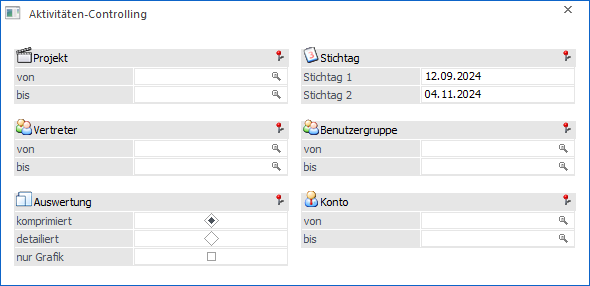

Mit der Auswertung "Aktivitäten-Controlling", welche über den Menüpunkt…
1 WinLine FAKT
1 Auswertungen
1 Projektauswertungen
1 Aktivitäten-Controlling
… aufgerufen wird, kann ein Vergleich der Projekte zu 2 verschiedenen Stichtagen erfolgen und somit der Fortschritt kontrolliert werden.
Hinweis
Das Aktivitäten-Controlling steht auch im Reportassistenten (WinLine Start / ActionServer / Reportdefinition) für den Action-Server bzw. für Cockpitlisten zur Verfügung.

Die Auswertung kann nach den folgenden Kriterien eingeschränkt werden:
Ø Projekt
Hier kann die Einschränkung auf das Projekt bzw. die Projekte erfolgen.
Ø Stichtage
An dieser Stelle erfolgt die Eingabe der beiden Stichtage, zu denen das Projekt verglichen werden soll.
Ø Vertreter
Hier kann eine Einschränkung auf den Vertreter vorgenommen werden.
Achtung
Hier wird nach WEB-Benutzern gesucht, welche einen Vertreter zugeordnet haben.
Ø Benutzergruppen
An dieser Stelle kann die Einschränkung auf eine bestimmte Benutzergruppe (Web-Gruppen) erfolgen.
Ø Konten
Mit Hilfe dieser Felder kann eine Einschränkung auf bestimmte Konten vorgenommen werden.
Ø Status
Bei der Auswahl Alle werden alle Projekte unabhängig vom Status angezeigt. Bei der Auswahl eines bestimmten Status werden nur Projekte angezeigt, deren letzter Status gleich der Auswahl ist. So können z.B. alle Projekte ausgewertet werden die zurzeit auf "Termin vereinbaren" stehen.
Ø Auswertung
Die Auswertung kann wahlweise komprimiert oder detailliert ausgegeben werden.
ü komprimiert
Es wird die Summe
der einzelnen Pre- und Post-Sales-Phasen in Zahlen und mit einer Funnelgrafik
dargestellt. Andere Grafiken können über die rechte Maustaste ausgewählt
werden.
Die einzelnen Werte sind mit einer DrillDown-Option versehen. Mit
Klick auf einen Wert erhält man eine Statusinformation, d.h. eine Liste der
Projekte, die zum jeweiligen Stichtag den entsprechenden Status hatten.
ü detailliert
Man erhält eine
Auswertung, welche pro Projekt den jeweils gültigen Projektstati ausweist, unter
Berücksichtigung der zuvor ausgewählten Stichtage. Hierbei werden all jene
Projekte ausgegeben, die entweder einen Pre-Sales- oder einen Post-Sales-Status
haben.
Ø nur Grafik
Mit Hilfe der Option "nur Grafik" besteht bei der Ausgabevariante "komprimiert" die Möglichkeit sich nur die Grafik anzeigen zu lassen. Die Summenangabe wird bei Aktivierung dieser Option nicht ausgewiesen.
Buttons

Ø Ausgabe Bildschirm
Mit Hilfe des Buttons "Ausgabe Bildschirm" oder der Taste F5 wird die Auswertung am Bildschirm ausgegeben.
Ø Ausgabe Drucker
Durch Anwahl des Buttons "Ausgabe Drucker" wird die Auswertung am Drucker ausgegeben.
Ø Ende
Durch Anwahl des Buttons "Ende" bzw. der Taste ESC wird die Auswertung geschlossen.
Ø Voreinstellung speichern
Durch Anwahl dieses Buttons erfolgt eine benutzerspezifische Speicherung aller im Fenster getätigten Einstellungen. Diese sogenannten "Voreinstellungen" können jederzeit wieder abgerufen werden und ermöglichen dadurch ein schnelleres und zielorientierteres Arbeiten (nähere Informationen entnehmen Sie bitte dem Kapitel "Die Voreinstellungen").